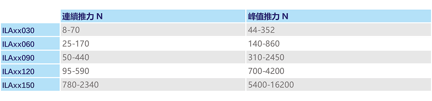
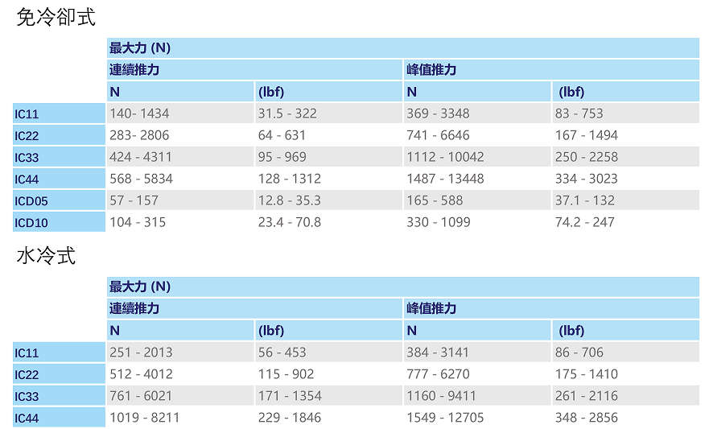
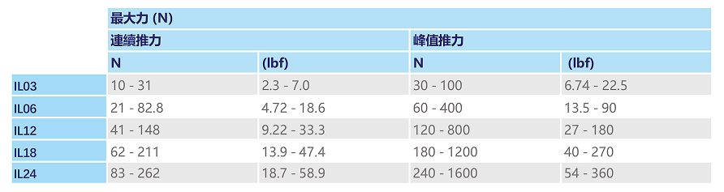
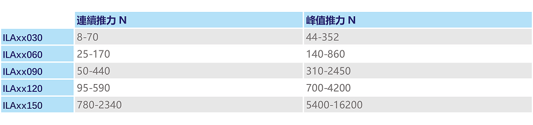
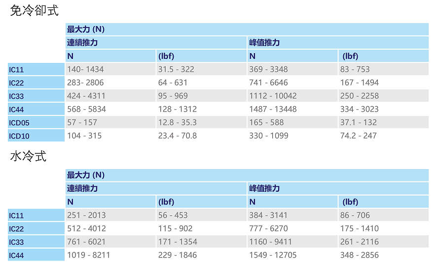
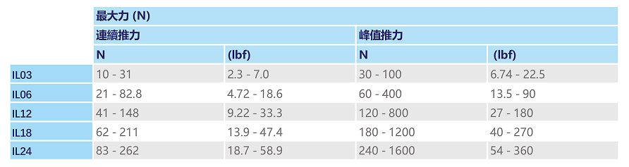

高扭力密度、精度和效率
高扭力密度、精度和效率


 






相關產品

DDL線性馬達

AKD驅動器
客戶需求
切割設備提升效率的關鍵之一，就是切片送片工位。目前主流切割設備的生產效率約 240–300片/分鐘，切片精度可達 ±0.15mm，但隨著產能需求增加，終端市場對效率與品質的要求也越來越高。因此，切割設備製造商需要找到能同時提升效率與精度的最佳方案。
科爾摩根方案
切割設備製造商經過多方評估，最終選擇採用 DDL線性馬達搭配AKD伺服驅動器 的高性能解決方案，取代傳統雙工位切片送片的機械結構。 雙工位切片送片平台重量約 30–40kg，由於平台慣量大，傳統機構在高速運行時容易產生角度偏差與震動。採用線性馬達後，透過直接驅動技術，顯著提升定位精度與運行穩定性。
方案優勢
1.高速穩定
DDL線性馬達最大推力可達 3152N，確保在馬達加速度達 2.5g 的情況下，切片送片效率穩定維持在 240–300片/分鐘。2. 精度提升
在切片送片過程中，前後換片與送片速度越快，馬達的速度控制就越重要。科爾摩根高性能AKD伺服驅動器能精準控制速度與位置，確保平台在高速運行下仍保持穩定，並減少震動，提升切片精度。3. 安全可靠
AKD伺服驅動器具備高速控制迴路與高響應頻率，能將切片平台的定位誤差控制在 ±2% 以內，並在高速換片時保持載荷平衡，將切片精度提升至 ±0.075mm，確保電池品質與安全性。
 © 2025 Kollmorgen. All rights reserved.
© 2025 Kollmorgen. All rights reserved.